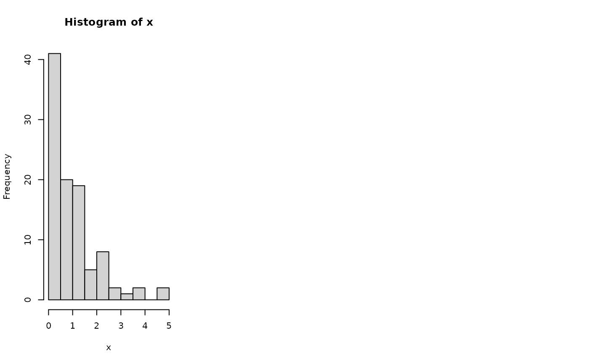

R/e_log_shift.R
e_log_shift.RdDefault min_add values:
If specified, use that.
All positive, add 0.
Min is 0, add the minimum non-0 value.
Min is negative and max is positive, add the minimum non-0 value (so minimum is now the previous non-0 value).
Max is negative, add the minimum value plus 1 so log2(x)=0 is the minimum value.
e_log_shift(x, min_add = NULL, base_log = 2, sw_symmetric = c(FALSE, TRUE)[1])numeric vector with attributes
f_print_example <- function(x, x2 = e_log_shift(x)) {
print(x)
print(x2)
par(mfrow = c(1, 2))
hist(x)
hist(x2)
par(mfrow = c(1, 1))
invisible(NULL)
}
e_log_shift(x = c(0, 1, 2, 3))
#> [1] 0.000000 1.000000 1.584963 2.000000
#> attr(,"e_log_shift")
#> min_add base_log
#> 1 2
e_log_shift(x = c(0, 10, 100, 1000), base = 10)
#> [1] 1.000000 1.301030 2.041393 3.004321
#> attr(,"e_log_shift")
#> min_add base_log
#> 10 10
e_log_shift(x = c(-4, -2, 0, 2, 4))
#> [1] 1.000000 2.000000 2.584963 3.000000 3.321928
#> attr(,"e_log_shift")
#> min_add base_log
#> 6 2
# Symmetric, positive with right skew
x <- rgamma(100, 1, 1) |> sort()
x_log <- e_log_shift(x, sw_symmetric = TRUE)
#> Error in loadNamespace(x): there is no package called ‘moments’
print(x)
#> [1] 0.003658411 0.005144624 0.017154388 0.046582671 0.077999784 0.084679427
#> [7] 0.099323380 0.127975762 0.134282613 0.146031686 0.146612850 0.152866370
#> [13] 0.168724556 0.171330648 0.174731530 0.183147855 0.213507238 0.224011365
#> [19] 0.271842690 0.295983740 0.302012208 0.305675400 0.306740757 0.307620515
#> [25] 0.314088160 0.360097505 0.363752156 0.365737417 0.371486698 0.398331247
#> [31] 0.421137508 0.425729358 0.428496150 0.429207001 0.440969199 0.445630136
#> [37] 0.451102287 0.451411578 0.454176311 0.471705432 0.473964182 0.501417263
#> [43] 0.536486211 0.539787378 0.555630463 0.564518587 0.565634272 0.587486992
#> [49] 0.588743426 0.613069575 0.668832494 0.671932594 0.702450668 0.708823537
#> [55] 0.773338537 0.780812906 0.814105180 0.826275642 0.840669678 0.887875799
#> [61] 0.948181304 1.029251432 1.045625319 1.061004589 1.067466169 1.101619033
#> [67] 1.119188189 1.119936300 1.132873615 1.138792334 1.263585453 1.272437900
#> [73] 1.296433794 1.328995097 1.332974661 1.429152089 1.472231357 1.486987273
#> [79] 1.490936496 1.493828115 1.650902496 1.751169405 1.760477725 1.832806400
#> [85] 1.944199298 2.040328510 2.051848218 2.070488809 2.148104476 2.200527783
#> [91] 2.256835426 2.388620236 2.422814781 2.570422542 2.935497119 3.307549177
#> [97] 3.720221675 3.925215671 4.550388420 4.930433146
print(x_log)
#> Error: object 'x_log' not found
par(mfrow = c(1, 3))
hist(x)
hist(x_log)
#> Error: object 'x_log' not found
dat_skew <- tibble::tibble(min_add = seq(0, 1, by = 0.01), skewness = NA)
for (i_row in seq_len(nrow(dat_skew))) {
## i_row = 1
dat_skew$skewness[i_row] <-
e_log_shift(x, min_add = dat_skew$min_add[i_row]) |>
moments::skewness()
} # i_row
#> Error in loadNamespace(x): there is no package called ‘moments’
plot(dat_skew$min_add, dat_skew$skewness, type = "l")
#> Warning: no non-missing arguments to min; returning Inf
#> Warning: no non-missing arguments to max; returning -Inf
#> Error in plot.window(...): need finite 'ylim' values
abline(h = 0, col = "gray50")
abline(v = attr(x_log, "e_log_shift")["min_add"], col = "gray50")
#> Error: object 'x_log' not found
par(mfrow = c(1, 1))

print(c(skew_x = moments::skewness(x), skew_x_log = moments::skewness(x_log)))
#> Error in loadNamespace(x): there is no package called ‘moments’
# Symmetric, positive with right skew, less than 1
x <- rgamma(100, 1, 1) |> sort()
x <- x / max(x + 1)
x_log <- e_log_shift(x, sw_symmetric = TRUE)
#> Error in loadNamespace(x): there is no package called ‘moments’
print(x)
#> [1] 0.001258637 0.002150580 0.003928126 0.003939101 0.007127428 0.013345570
#> [7] 0.014190147 0.014236403 0.014244423 0.015208275 0.017580803 0.025493590
#> [13] 0.025887705 0.027121100 0.030009658 0.031432487 0.032501878 0.032998734
#> [19] 0.033099693 0.033485321 0.039846425 0.041806624 0.043267867 0.044723307
#> [25] 0.052363157 0.055246369 0.058198399 0.058386916 0.058595077 0.061519567
#> [31] 0.062539413 0.063845170 0.064258953 0.067449380 0.067690714 0.068305279
#> [37] 0.071055128 0.082290545 0.086538544 0.087973778 0.090923951 0.090971610
#> [43] 0.099761723 0.099946067 0.104363287 0.107101289 0.118953224 0.119836240
#> [49] 0.121597487 0.122653924 0.126007566 0.127748509 0.133616479 0.133670140
#> [55] 0.142979730 0.148078649 0.150592808 0.152120573 0.155236398 0.159557340
#> [61] 0.164169404 0.166777727 0.168675081 0.178224450 0.183188700 0.186304210
#> [67] 0.189118581 0.202858403 0.203393635 0.227492268 0.235091934 0.240973780
#> [73] 0.247898391 0.248155495 0.255185594 0.256696170 0.272539238 0.276295678
#> [79] 0.276528851 0.284859428 0.290372201 0.292525363 0.301314852 0.317493200
#> [85] 0.318508226 0.321258325 0.322197173 0.327460835 0.343917532 0.353610869
#> [91] 0.360594809 0.368767069 0.427398012 0.427613077 0.438620030 0.550980713
#> [97] 0.558775327 0.598975229 0.675475613 0.859089809
print(x_log)
#> Error: object 'x_log' not found
par(mfrow = c(1, 2))
hist(x)
hist(x_log)
#> Error: object 'x_log' not found
par(mfrow = c(1, 1))
print(c(skew_x = moments::skewness(x), skew_x_log = moments::skewness(x_log)))
#> Error in loadNamespace(x): there is no package called ‘moments’
# Symmetric, negative with left skew
x <- -rgamma(100, 1, 1) |> sort()
x_log <- e_log_shift(x, sw_symmetric = TRUE)
#> Error in loadNamespace(x): there is no package called ‘moments’
print(x)
#> [1] -4.10935307 -4.00475758 -3.57337630 -3.52706501 -3.03108346 -2.91911554
#> [7] -2.35564435 -2.35136270 -2.31247734 -2.12443873 -2.07830953 -1.89367085
#> [13] -1.85456797 -1.83048216 -1.79109800 -1.75553228 -1.68909569 -1.65068864
#> [19] -1.61753699 -1.60139504 -1.52824902 -1.46190488 -1.42165048 -1.36967020
#> [25] -1.32947364 -1.26010679 -1.19899697 -1.17788521 -1.11509956 -1.08890728
#> [31] -1.05794497 -1.02259484 -1.00663963 -0.97172910 -0.95686307 -0.93581031
#> [37] -0.91362664 -0.87421310 -0.83340259 -0.83216898 -0.82797287 -0.82209417
#> [43] -0.81894512 -0.79217381 -0.77431209 -0.75434445 -0.74973926 -0.74636257
#> [49] -0.73329866 -0.72324455 -0.71804538 -0.71394885 -0.71385769 -0.69942554
#> [55] -0.69876432 -0.69373236 -0.68714613 -0.65073646 -0.64852048 -0.63477460
#> [61] -0.60812045 -0.59010131 -0.57397720 -0.53782935 -0.45870431 -0.44478090
#> [67] -0.43107541 -0.42235663 -0.41809759 -0.37424709 -0.37113732 -0.36896943
#> [73] -0.36794546 -0.35286000 -0.34372515 -0.33938130 -0.33020889 -0.32808435
#> [79] -0.32776906 -0.32313388 -0.30503703 -0.28177248 -0.26590585 -0.26164941
#> [85] -0.25453213 -0.25420747 -0.24170047 -0.20720292 -0.20624587 -0.18745221
#> [91] -0.13795759 -0.12388652 -0.10293043 -0.09783887 -0.07645855 -0.06542000
#> [97] -0.03764682 -0.03591865 -0.03547449 -0.02259902
print(x_log)
#> Error: object 'x_log' not found
par(mfrow = c(1, 2))
hist(x)
hist(x_log)
#> Error: object 'x_log' not found
par(mfrow = c(1, 1))
print(c(skew_x = moments::skewness(x), skew_x_log = moments::skewness(x_log)))
#> Error in loadNamespace(x): there is no package called ‘moments’
# Symmetric, positive with left skew
x <- -rgamma(100, 1, 1) |> sort()
x <- x + min(x)
x_log <- e_log_shift(x, sw_symmetric = TRUE)
#> Error in loadNamespace(x): there is no package called ‘moments’
print(x)
#> [1] -8.514782 -7.760085 -7.442092 -7.294557 -7.101531 -6.581238 -6.490582
#> [8] -6.427352 -6.386933 -6.224468 -6.212632 -6.200393 -6.196391 -5.822901
#> [15] -5.798993 -5.749455 -5.735689 -5.734274 -5.717962 -5.606433 -5.568467
#> [22] -5.559583 -5.517342 -5.501368 -5.485247 -5.464571 -5.443900 -5.407816
#> [29] -5.361135 -5.313580 -5.312654 -5.297730 -5.294376 -5.281363 -5.279879
#> [36] -5.205981 -5.184559 -5.156703 -5.129565 -4.982373 -4.969384 -4.968074
#> [43] -4.967780 -4.959680 -4.946649 -4.927833 -4.920168 -4.917010 -4.913595
#> [50] -4.899999 -4.856586 -4.853737 -4.836272 -4.823559 -4.741463 -4.725567
#> [57] -4.690740 -4.672334 -4.649270 -4.643066 -4.630099 -4.628254 -4.625441
#> [64] -4.623487 -4.597000 -4.579078 -4.575156 -4.568003 -4.564110 -4.530863
#> [71] -4.524532 -4.497080 -4.487453 -4.480643 -4.475185 -4.469544 -4.467031
#> [78] -4.456140 -4.445544 -4.435232 -4.430717 -4.430021 -4.426302 -4.404050
#> [85] -4.390296 -4.389333 -4.371549 -4.368182 -4.359321 -4.357541 -4.357138
#> [92] -4.348014 -4.340483 -4.338032 -4.335030 -4.324831 -4.283598 -4.265223
#> [99] -4.265205 -4.259129
print(x_log)
#> Error: object 'x_log' not found
par(mfrow = c(1, 2))
hist(x)
hist(x_log)
#> Error: object 'x_log' not found
par(mfrow = c(1, 1))
print(c(skew_x = moments::skewness(x), skew_x_log = moments::skewness(x_log)))
#> Error in loadNamespace(x): there is no package called ‘moments’